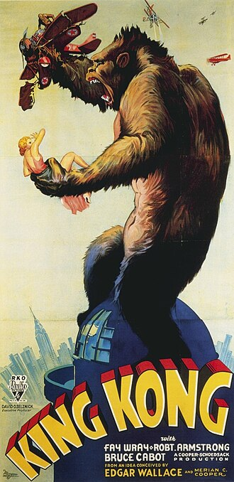

King Kong (1933)
Source Card

Photo

King Kong is a 1933 American pre-Code adventure horror monster film directed and produced by Merian C. Cooper and Ernest B. Schoedsack, with special effects by Willis H. O'Brien and music by Max Steiner. Produced and distributed by RKO Radio Pictures, King Kong is the first film in the self-titled franchise, combining live action sequences with stop-motion animation using rear-screen projection. The idea for the film came when Cooper decided to create a motion picture about a giant gorilla struggling against modern civilization. The film stars Fay Wray, Robert Armstrong, and Bruce Cabot. The film follows a giant ape dubbed Kong who feels affection for a beautiful young woman offered to him as a sacrifice.
External Links
This page aggregates references to the source material behind Name Lore entries.